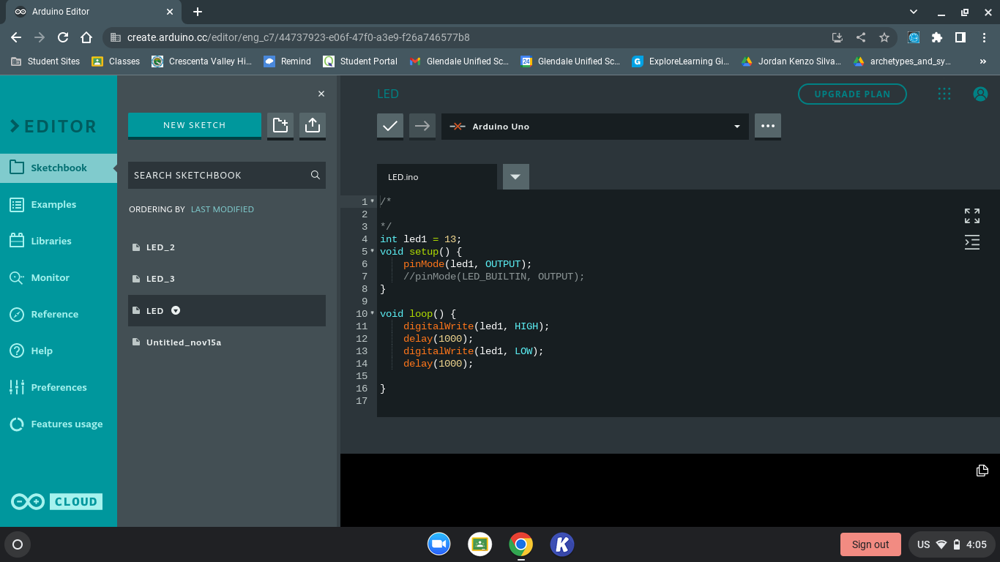

Engineering Notebook
This my favorite food reciepe.

8/19/22:
I learned the basics for creating a website using html.
Week of 8/26/22:
I have learned how to apply color, add pictures and make this site available online using github.
Week of 9/2/22:
I learned about the basics for mechanical engineering and safety for the engineering lab. I started the Tinkercad, a 3D modeling website, and experimented with it as well as starting the Rube Goldberg project. Some issues initail were controlling Tinkercad with a trackpad as it was really difficult to be reliable. For Thursday's challenge day, I was given the task to replicaate a home appliance in Tinkercad. My choice to replicate was a Fridge as I believed it was easier. An issue that occured was not being used to how to control Tinkercad. Even with a mouse, it was often hard to control it.


Week of 9/5/22:
This week, my Rube Goldberg contraption was finished. I was put on a team with Druv, Daniel and Ani to build a master Rube Goldberg contraption. We agreed upon one design that utilizes concepts from each of our own designs. A leading ramp, with a lever that hits a tower that pops the balloon.

Week of 9/5/22:
This week, we measured, cutted and started to put together our finalized Rube Goldberg design. Our group was mostly efficient. We had equal opportunities putting things together. Next week, we should be able to finish the Rube Goldberg contraption. During Challenge Day, the goal was to make a paper boat that can hold the highest possible weight without sinking for 5 minutes. Our group succeded with a boat with 15.1 lbs.
Challenge Day: Paper Boat
Week of 9/12/22:
This week, we put together all the pieces for the contraption. We agreed upon a counterweight, a battery. Unfortunately, we had to make changes to the original CAD model. Firstly, we had to add railings to the ramp in order to keep the baseball stable enough. Secondly, we had to add arms to the ramp itself to prevent the lever from moving all too much. Another issue was the original tater as we had difficulties with the smaller design. Eventually through vigourus testing, we made the tater out of 2 long wood beams taped together. An additional issue was the weight towards the final componet as it often fell forward or never fell. Our solution was to add a wood beam which was enough weight to allow the piece to reliable fall onto the balloon. Thursday's challenge day involved estimating the total number of bathroom stalls in the school. We asked around and got an estimated 40 stalls in total. For the Rube Goldberg competition, it took two attempts to pop the balloon. The primary issue was that the balloon was too large preventing the contraption from functioning properly.


Week of 9/26/22:
This week, I started to learn Bioengineering. The goal this week is to model a prosthetic for an animal. Restricted animals include Dog, Cat, Turtle, and Human prosthetics. I used a Polar Bear with the hind leg as the prosthetic. The main materials used are wood and string for the snow shoe, Titanium alloys for the main cylinders and ball joints,industrial lubricant for the ball joints, Polyurethane Laminate connecting the cylnders and covering any exposed parts including the snow shoes. Three ball joints are required. I would give the prosthetic at $5,372.


Week of 10/3/22:
This week, we learned about computer engineering and how computer science as well as electrical engineering function in computer engineering. We learned the parts of a computer, the problems of the current computer system, the salaries of computer engineers and the bare basics of a comuter. The main focus is disseccting a laptop and identifying each part on a worksheet. The dissection was went fairly smooth and was accomplished on Wedsnday. However, the internet was down on Thursday and we could not resemble the laptop. Instead on Thursday, there was a challenge in estimating the total number of doors/wheels in CV. I was on team doors and estimated 6,000 doors with our team of 3. Next week, I hope to at least reasemble the laptop to its original state.
Parts of the Laptop:

- 500 GB WD Blue Harddrive
- 6 GB DDR3 RAM (Samsung and Crucial)
- Battery
- Disk Drive
- WiFi Card
- Audio Card
- Motherboard with CPU and GPU
- Heat sink
- Fan
Keyboard and shell:

Week of 10/10/22:
This week, I learned about areospace engineering and the application in the world. From missiles to hand gliders, those will all constitute as aerospace engineering. Draft, lift, weight, and thrust are four fources primarly acting on an object that is actively in the air and moving. These forces must be understood in order to afffectively utilize airal objects. The primary challenge for aerospace engineering is to make a rocket fly as far as possible using a 2L bottle. Me and Augie designed a rocket that consists of the bottle with 4 fins at the bottom, 2 fixed wings at the side, a coned top, and 1L of water that is pressurized with an air pump to theortically launch the rocket. The paper draft and TinkerCad design went smooth without any problems. For challenge day, the goal was to make a paper airplane that could be the closet to the orange bucket out in the quad launched from the balcony of the stairs. Our airplane was 42ft away. What could have been done better, is narrowing the plane's profile so more space is utilized for lift as there was limited room for it. A BOM, Build of Materials, was created to list all the materials needed.
BOM for Rocket
Week of 10/17/22:
This week, the initial rocket design had to been modified to due a few factors: the wings were not stable enough had to be shorten and the fins were not accuratley shown with them moved up to address the problem. On Tuesday and Wednsday, we began creating the parts out of cardboard. Not a lot of progress could be made on Tuesday as we didn't have a box cutter for the majority of the period. By Wedsnday however, we got all the parts cut out including the cone which was cleavery made from cardboard that was folded and cut in particular ways to get the cone shape. On Thursday, the rocket was fully assembled using a variety of tape and hot glue. Putting on the parts was a challenge as the neither materials would help stick together both the cardboard and plastic bottle. The improvised solution to this was to long pieces of tape that forced the parts into position as direct connectons had poor results. On Friday, the rocet was launched and the results were not expected. I did not predict that the rocket would have a poor lift up and instead propeling itself forward.
Student Challenge Analysis: Bottle Rocket


Week of 10/24/22:
This week, I learned about environmental engineering. This field primarly composes on how to negate negative human impact on the environment. The roles of environmental engineering are more crucial this day in age as humanity's impacts are noticable piling up, like climate change. The primary lab for this unit would be a bottle filtration system. The goal is to filter out the black water, water that is not safe for consumption, to at least grey or white water, which is significantly safer than black water. The bottle would be composed of rocks, gravel and sand to filter out the black water. The bottle that my team made comprised of a higher sand composition, which most likely slowed down the filtration of the water. The water that could be collected was filtered into grey water and if given more time, could be filtered into white water. For challenge day, the goal was to calculate the number of candy corns that can fit on a single piece of paper. My group estimated 216 candy corns as 26 candy corns could fit height wise and 9 could be fit width wise. Multiply both to get 216 in total. The actual number of candy corns that could fit 222 candy corns
Week of 10/31/22
This week, I learned about electrical engineering. There are four types of units used: Voltage (Volts), Current (Amps), Resistnace (Ohms) and Power (Watts). The main goal for the next three weeks is understanding how these work within a set environment. This environment will be composed of breadboards and Arduinos on the final week. The amount of any of these units can be calculated through V=IR and P=IV. Values can be solved through Algerbraic means. On Wedsnday, TinkerCad was used to simulate a basic circuit on a breadboard. The cicruit was composed of a power source, LED and a resistor. On Thursday, we were tasked to complete three labs based upon how the LEDs were arranged. The LEDs were arrranged in Parrallel, Series and dividing the voltage of 150V. The first 2 labs were easy, however the third was the most difficult due to the amount of voltage that must be reduced to 3V to power the LED. For the next few weeks I am fairly excited learnng this field prior to other fields.
Example Circuit made:
Labs involving LEDs in Parrallel and Series:
Third Lab involving voltage divider
Week of 11/7/22:
This week, I was able to use a physical breadboard for the circuits made in tinkercad. A Arduino was used to power the breadboard connecting 3.3V to positive and negative to ground. The circuits were fairly easy to replicate as the resistor values were at a constant of 330 Ohms. No math was needed for the circuit building. A personal note: the breadboards were much smaller than I expected as they looked mch bigger on TinkerCAD and videos I watched in the past. The next day, a multimeter was used to measure the voltage and resistance of the circuits made yesterday. Although I was confused to how to use the multimeter, it was still a fairly straight forward process. Next week, we should be able to start coding the Arduino to do specific tasks with the LEDs. For challenge day this week, we were tasked to find wether a math class or writing to one million was easier. The relavant info is on the challenge form below.
Student Challenge Analysis: Math vs. 1,000,000
Single LED:
LEDs in Parrallel:
LEDs in Series:
Week of 11/14/22:
This week, we started to write and program the arduino to set a specific circuit pattern. The coding process was easy to due it being easy to undersatnd. The circuit building was easy and stright forward as it was for previous weeks. It was stil very cool to see the LEDs the light up in certain patterns and timings. Each circuit was completed within the class period within the two days we did it. The challenge day for this week was based upon a real situation in which a carcinogen, bromade, was building up in the town's water supply, causing cancer to its population. For Thanksgiving break, I wil definitively be at home. Since there is no homework assigned for any of my classes, I will be just be relaxing for the week, playing video games and watching outube videos.
Student Engineering Challenge Analysis: Lake Carcigene
Code and Video for the First Circuit:

Code and Video for the Second Circuit:
Code and Video for the Third Circuit:
Code in video with Fourth Circuit:
Code in Video with Fith Circuit:
Week of 11/28/22:
This week, we learned about civl engineering and the project, the finale for this semester. Civil enginerring is the engineering field of creating practical infustructure for humans. The infustructure consists of roads, buildings, water and sewer systems, bridges, transport system, etc. Other fields of engineering overlap with civil, in paticular bioegineering. The project for civil engineering is building a spaghetti bridge that spans over two feet with wood glue. Then a handkerchief is attatched to the bridge and to a bucket. The bucket is then filled with water until the bidge breaks. Each bridge can hae a maximum of 20 pieces of spaghetti. I was teamed up with Christian, Riley, and Elio. The first day of the project resulted in little progress due to Riley and Christian absences. On Wednsday, a bridge with an two archs was designed however it was too costly to make as it exceded the 20 maximum. On Thursday, a new design was made in hopes of it being exactly 20. The new design sill exceded the limit but we ended up compromising the road supports in favor of reaching the limit without going over. For Friday, we might be gluing the bridge together.
Pallete of Bridge Designs:
Left: Original Design Right: Final Design without Compromise
Bridge with Design Altercation:

Week of 12/4/22:
On Monday, quite unfortunately, our bridge was trampled upon and broken. This set us back to the begnning of the construction. The bridge was remade using new pieces. Each part took one day of assembly, a total of three days plus gluing everything together for another day. On challege day, we played Freeways in order to compete on the most efficient interchange design. By the end of the period we managed to get 5 squares under our team. We also made another bridge within the period on Friday, that was much simpler in design compared to the other one.
Other Bridge:
Week of 12/12/22:
This week, we tested the bridges starting first with a cup and rope. Both bridges both weighed around 16.5g Both bridges collapsed after the test. After some anaylsis of the first bridge, we determined there was a weak point were initial broke. As a result, our new bridge will be smaller height wise in order to add more supports on the road. For the final, the new bridge modification collapsed within the same time period as before.
First Bridge Collapse:
Second Bridge Collapse:
Final Bridge Collapse:
Final Bridge After Collapse:
Winter Break:
My winter break was good I enjoyed my time playing through Terraria and getting to Hardmode. I watched a fair amount of Youtube videos and watched a full playlist of Empire at War: Thrawn's Revenge. For Christmas, I had a ribeye steak with butter, rosmary, and garlic as seasoning. It tasted really good and was the first time I had steak that was not well cooked. For New Years, I went to Kyushu Ramen in Van Nuyes. I had Miso Ramen with Fried Rice which was really delicious. I also completed a Jigsaw puzzle in that time.
Week of 1/9/23:
This week, we learned about buisness engineering. Buisness engineering focuses on managing finacial data, maximizing profits, dealing with ethical questions such as the Trolley Problem, knowing what the consumer wants, etc. The project we had to was a mock Shark Tank presentation in which we had to present a product based upon something engineering related or something unrealistic. Our product was a VR controller that is a glove.
Product Presentation
Week of 1/16/22: This week, we did our buisness presentation. While I enjoyed listening to the presentation, I had a hard time understanding the math behind ownership. It was confusing and killed my already low enjoyment of economics. I made one offer of 75K for 6%. Personally, buisness engineering is definitively unintresting.
Week of 1/23/23:
This week, for the first half of the week, we focused on chemical engineering. Chemical engineering involves the process, manufacturing, and distribution of chemical reactions. For the project, the goal was to create a non newtonian fluid made of cornstarch and water. This fluid does not follow Newton's law of viscosity. The liquid in this case acts like a solid when hit with a great force but acts like a liquid when lighter force is used.


For the second half of the week, we worked on the semester long project. It will for 8 weeks in total. We are expected to choose a project and to build it according to what research done and what we want at the end. First week is proposal, second week is CADing, and the 6 weeks after are prototyping testing, and anaylsis.
Week of 1/30/23:
This week, the project progression countinues. I managed to finish the CAD by Thursday.I should be able to complete the circuit diagram on Friday/Saturday. The RC car will be controlled via bluetooth by a HC-05, powered by two 18650 batteries, all routed to the Arduino Uno, and a L298N Drrive Motor, controller four TT DC motors. There is also a plan for LED strips. For challenge day, the goal was to make the longest and stable bridge possible with 15 sticky notes. We did not manage to test it due to the period ending. The sticky notes were cut in 1 cm lenghs. The issue was that it was the sticky enough to hold itself together.
Week of 2/6/23:
This week, the design and coding for the car began. Most of the cardboard parts were measured besdies a few suport frames. On the coding side, the code is complete for now, however, due to being limited to two motors as of recently, the code will mostly likely have to change.
For challenge day, the goal was to go the fastest while using a meter stick to hold a water balloon wihtout it popping. We were given wooden sticks and rubber bands to do it. Our design had a claw/glove design with a layer of rubber bands on the bottom holded by a square stick frame and three angled and horizontal sticks with the balloon in the middle.
Student Challenge Analysis: Water Balloon Transport
Picture of Design:

Videos of Chalenge:
Week of 2/13/23:
This week, I have finished the majority of the wiring for the car. The wiring that is left is for the HC-05 and the motors. Next week, I should be able to solder wires to the motors and test everything out. Then I should be able to put all the cardboard pieces together and maybe test it with battery power. For the missing two motors, I sould be able to use Lego wheels and attatch them.